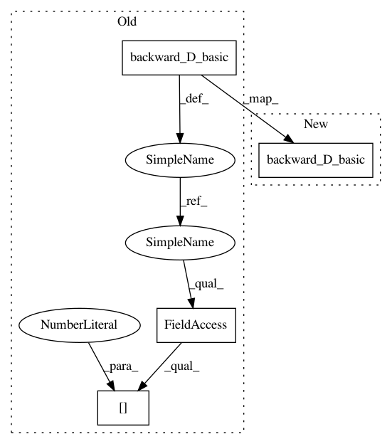

f4af199e0025065d7006fe326b55f25a74e9d625,models/cycle_gan_model.py,CycleGANModel,backward_D_A,#CycleGANModel#,113
Before Change
def backward_D_A(self):
fake_B = self.fake_B_pool.query(self.fake_B)
loss_D_A = self.backward_D_basic(self.netD_A, self.real_B, fake_B)
self.loss_D_A = loss_D_A.data[0]
def backward_D_B(self):
fake_A = self.fake_A_pool.query(self.fake_A)
loss_D_B = self.backward_D_basic(self.netD_B, self.real_A, fake_A)
After Change
def backward_D_A(self):
fake_B = self.fake_B_pool.query(self.fake_B)
self.loss_D_A = self.backward_D_basic(self.netD_A, self.real_B, fake_B)
def backward_D_B(self):
fake_A = self.fake_A_pool.query(self.fake_A)
self.loss_D_B = self.backward_D_basic(self.netD_B, self.real_A, fake_A)
In pattern: SUPERPATTERN
Frequency: 4
Non-data size: 4
Instances
Project Name: richzhang/colorization-pytorch
Commit Name: f4af199e0025065d7006fe326b55f25a74e9d625
Time: 2018-04-18
Author: junyanzhu89@gmail.com
File Name: models/cycle_gan_model.py
Class Name: CycleGANModel
Method Name: backward_D_A
Project Name: junyanz/pytorch-CycleGAN-and-pix2pix
Commit Name: f4af199e0025065d7006fe326b55f25a74e9d625
Time: 2018-04-18
Author: junyanzhu89@gmail.com
File Name: models/cycle_gan_model.py
Class Name: CycleGANModel
Method Name: backward_D_A
Project Name: richzhang/colorization-pytorch
Commit Name: f4af199e0025065d7006fe326b55f25a74e9d625
Time: 2018-04-18
Author: junyanzhu89@gmail.com
File Name: models/cycle_gan_model.py
Class Name: CycleGANModel
Method Name: backward_D_B